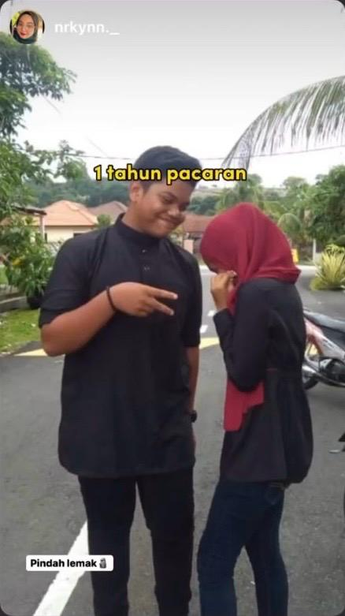
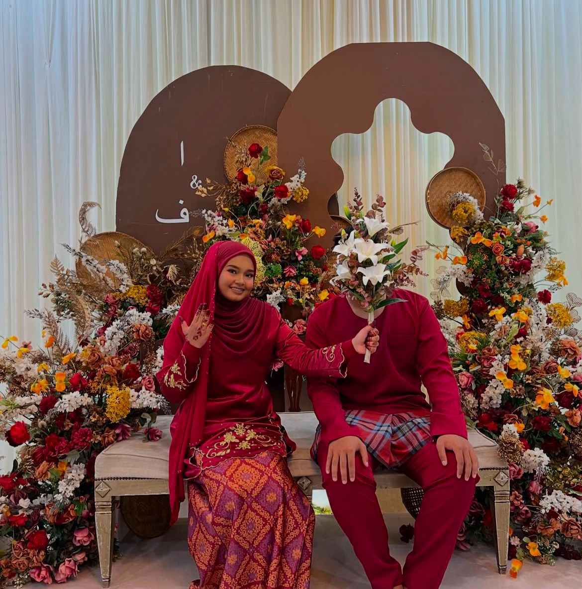
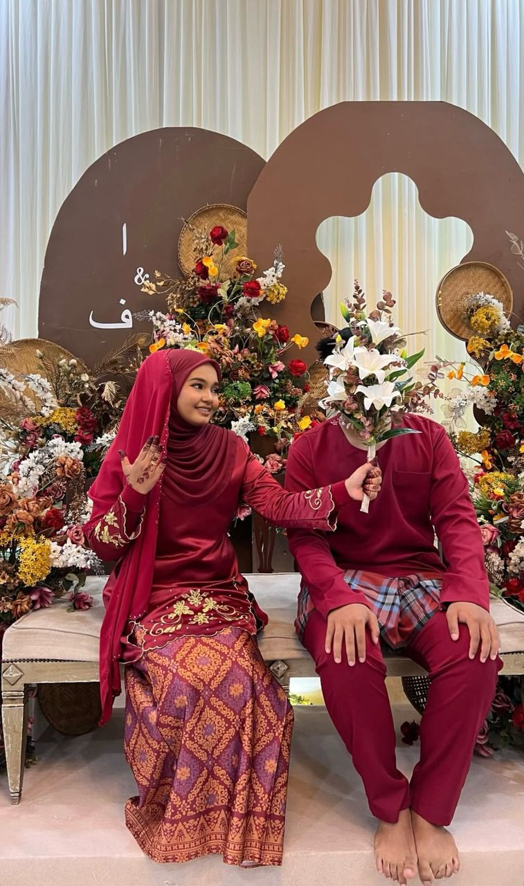
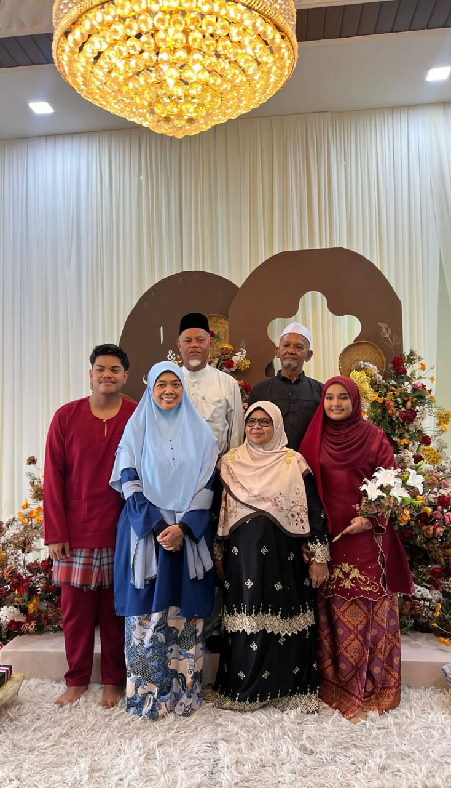
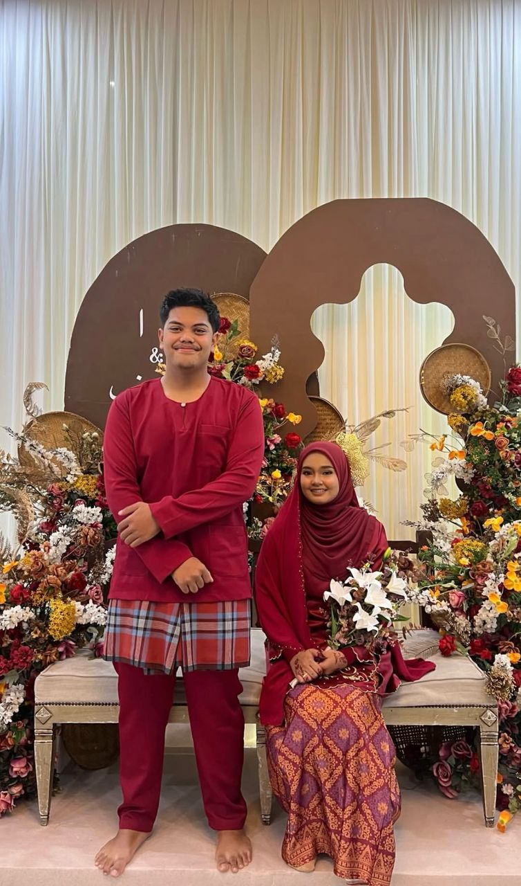

Before Engaged
Asikin dan Farid melalui banyak ujian dalam percintaan mereka sebelum berkahwin, namun setiap cabaran yang datang hanya menguatkan lagi ikatan di antara mereka. Dari perbezaan latar belakang hingga dugaan jarak dan salah faham, mereka tetap teguh mempertahankan cinta dengan kesabaran dan kepercayaan yang mendalam. Walaupun ada saat-saat sukar yang hampir menggoyahkan hubungan, kemanisan kasih sayang mereka sentiasa menjadi penguat semangat untuk terus bersama. Perjalanan cinta mereka bukan sekadar kisah biasa, tetapi bukti bahawa cinta sejati mampu mengatasi segala rintangan sebelum akhirnya disatukan dalam ikatan perkahwinan yang penuh bahagia.
“Inilah mereka ketika permulaan bercinta dahulu, saat segalanya masih penuh dengan debaran, harapan, dan impian yang belum pasti, namun tetap diperjuangkan dengan kesabaran dan kasih sayang.”

“Setelah setahun bercinta, mereka semakin mengenali satu sama lain, menghadapi pelbagai suka dan duka bersama, mengukuhkan ikatan dengan kepercayaan, dan menjadikan setiap cabaran sebagai penguat cinta yang lebih mendalam.”
After Engaged
Selepas bertunang, Asikin dan Farid terus mengharungi perjalanan menuju perkahwinan dengan penuh kesabaran dan ketabahan, mengurus segala persiapan sambil menempuh cabaran bersama. Setiap detik mendekati hari bahagia mereka dipenuhi dengan debaran dan harapan, menguatkan lagi kasih sayang yang telah lama terjalin. Akhirnya, dengan sekali lafaz yang penuh makna, mereka sah bergelar suami isteri, menandakan permulaan sebuah kehidupan baru yang diimpikan bersama, penuh dengan cinta, keberkatan, dan kebahagiaan.

Pertunangan mereka menjadi langkah pertama menuju ikatan yang lebih kukuh, diiringi doa dan harapan dari keluarga serta sahabat.

Walaupun masih ada ujian yang mendatang, mereka terus berpegang pada kesetiaan dan kepercayaan, menguatkan lagi cinta yang telah lama mereka bina.

Setiap detik menanti hari bahagia dipenuhi dengan persiapan dan doa, agar semuanya dipermudahkan dan diberkati oleh Allah.

Akhirnya, dengan restu keluarga dan sekali lafaz yang penuh makna, mereka disatukan sebagai suami isteri, semoga cinta mereka kekal selamanya, diberkati Tuhan, dan berlanjutan hingga ke syurga.